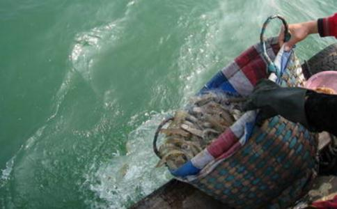

9月11号下午，
居士所著《现代因果实录》流传甚广，影响巨大，其度化众生，拔苦予乐的神奇事迹，被无数佛子津津乐道，在
居士特别崇尚
稍事休息后，果卿居士与华严寺部分法师和居士举行了座谈，我简单介绍了山东淄博拔众生苦放生会有关情况，并将放生会编印
上午11点讲座结束，开始放生。果卿居士与华严寺主持常净法师共同主法，带领现场近五百人念诵
这次放生的物命包括斑鸠、喜鹊、
仪轨结束后，打开铁笼，数百只各色鸟儿争先恐后，破笼而出，振翅高飞，逃出生天，场面十分壮观！在场所有人都法喜充满，欢呼雀跃！果卿居士捧起几只小鸟，亲自加持后放飞。很多鸟在寺内树上停留，目注众人，流连不去，似在谢恩。当是时，华严寺上空阳光灿烂，祥云朵朵，连空气仿佛都变的更加透明……胜似天宫，如同极乐！
众居士都踊跃
下午讲座中，果卿居士又特别提到上午的放生，他说，“修行其实就是倒过来做人”，现在社会上大多数人只知道贪着美味，
因为放生善款来自十方众生，其中包括从上海专门赶来的师兄，我们不敢怠慢，下午五点讲座结束后，立即带着果子狸、獾、刺猬出发，驱车数十公里进入郊区深山放生，这几位仁兄一出牢笼，立刻狂奔，受伤的獾尽管一瘸一拐，还是亡命逃窜！
这种场面虽然已经见过N次，但此情此景还是让我们无比震撼！人物一理，生命和自由是多么珍贵……真想狂声呼吁天下所有善良的人们，千万不要再杀生害命了！下山时已是夜凉如水，月朗星稀。深山之中薄雾笼罩，秋虫呢哝，另有一番情境。 虽然与果卿居士相处仅仅一天，但其
一、虚怀若谷，态度谦冲。
有两个细节足以说明：
细节一：第一天讲座开始后，果卿居士忽然想起了什么，停止讲话，让主持人找来一尊佛像放在讲台前方，并解释说现场不免有听课居士对他鞠躬顶礼，而作为凡夫，他不敢领受！面前放一尊佛像就等于所有顶礼都是给佛菩萨的，这样他才能安心讲课！
细节二：讲座间隙和休息时间很多师兄都很恭敬地称他为果卿师父，而他每次都不厌其烦地纠正说“叫我杨老师就行！”说了无数遍！而且对每位居士态度都十分谦和，软言慰喻，如沐春风！三天讲座，每天讲八小时，下座后还要接待各地师兄，但他始终毫无倦意，没有一丝怠慢！[page]
二、直心直言，绝不作伪！
然而，对当前佛教界及出家在家修行人中诸多不良风气，果卿居士却毫不客气，一一列举，并进行了严厉批评！包括华严寺，居士到达当晚，在寺内僧众宿舍住宿，发现宿舍内供有佛像后，当即对僧人提出批评！他指出每尊佛像都有
但在别的寺庙讲法时，由于果卿居士的直言戳到了某些人的痛处，有出家师父在讲座现场就与他发生了冲突，但他据理力争，从不妥协！也从不附炎趋势，人云亦云！尽管曾受到少数人的无理诽谤，却赢得了越来越多正信道场和信众的拥护和爱戴！因为宣扬
三、演讲精彩，摄受力强！
讲座中他一再强调一定要按本师释迦摩尼佛的经典去讲经
讲授经典过程中，不断举例穿插一些真人真事，都是他自己用
四、两袖清风，不贪钱财。
果卿居士每月退休金只有1900元，但本次受邀来华严寺讲课，来往费用没用寺庙一分钱。讲座期间，很多师兄争相供养，供斋，或要提供住宿，但居士一概回绝，吃住都在寺内，与僧人同等待遇，不收一分钱供养！
离开寺庙时，主持常净师父感觉很过意不去，要给居士3000元差旅费，被他严辞拒绝，到达机场时，给他买的当地特产也全部退回，一件不留！
尤其令人感动的是，居士临走前，还坚持在寺庙食堂功德箱内留下了400元饭钱！
讲座期间，他反复说过一句话：“我不会骗你们，因为我不贪财，而且我说的事如果有半点虚假，宁愿下
其实，他在讲座中以经说得明明白白，每个人都会有大大小小的毛病和问题，如果你能受教并按他所说立即戒除过失，一心向善，你所有的问题、病痛、不幸、阻碍都会有所改善甚至彻底消失！如果依旧我行我素，因循
居士举了一个实例，对我震动很大！
就在一周前在上海，一位母亲带着自己独生女儿辗转找到果卿居士，她女儿二十多岁却已身患两种绝症，红斑狼疮和尿毒症！全身红斑，精神萎靡，医院已经无能为力，只能在家等死！来求居士救她女儿一命！
果卿居士深入观察，了解因果后，毫不留情地训斥了女孩一顿，并指出了她的三大过失：
一、不孝父母！这女孩经常顶撞父母，为小事和父母争吵不休，常令父母为其伤心劳神，不得安宁又无计可施。
二、邪淫纵欲！该女子从小学开始就染上
三、脾气暴躁。女孩从小任性娇惯，自私急躁，脾气上来不管不顾，很少考虑别人，伤害过周围很多人，大大有干天和！
女孩母亲听完后，脸上很挂不住，她承认第一点和第三点，但对第二点完全否认！她说自己女儿虽有诸多毛病，但从小在男女作风问题上却十分谨慎，绝对不可能有居士所说的种种情形，她可以保证！
果卿居士说，你给我待一边去，让你女儿自己说！
这时，女孩“嘭”一声跪在地上，不停磕头，失声痛哭！一边流泪，一边忏悔，彻底招供，其从小至今所有经历与居士所说一模一样！她母亲这才心服口服，立即在屋内佛像前跪下，代女儿真心忏悔！女孩这时也跪在母亲面前，大力磕头，哭着求妈妈原谅她以前的不孝和任性！母亲既觉欣慰又感念佛恩，和女儿抱头痛哭！现场哭声一片，母女情深，十分感人！
女孩彻底忏悔，完全受教，发誓从此以后
几天后，果卿居士离开上海时，女孩前来送别，已经是面色红润，精神健旺，病情大有缓解！如果真能断恶向善，假以时日，必能彻底康复！佛是大医王，诚不我欺也！
再次顶礼赞叹果卿居士降迹
从这件事再对照一下自己，不孝、邪淫、性情暴躁！这不都是自己身上根深蒂固的顽疾吗？顽固程度甚至比那位女孩有过之而无不及！那所有的问题还用再问吗？！惟有挚诚忏悔，绝不再犯！
讲座中，果卿居士数次提到恩师
虽然和居士只有一天之缘，但以是受益良多，弥足珍贵！时光冉冉，世事无常，不知何时再能一见……惟有终生戒杀放生，吃素念佛，精进修行，利益众生，方能报答居士加持之恩，教诲之德！